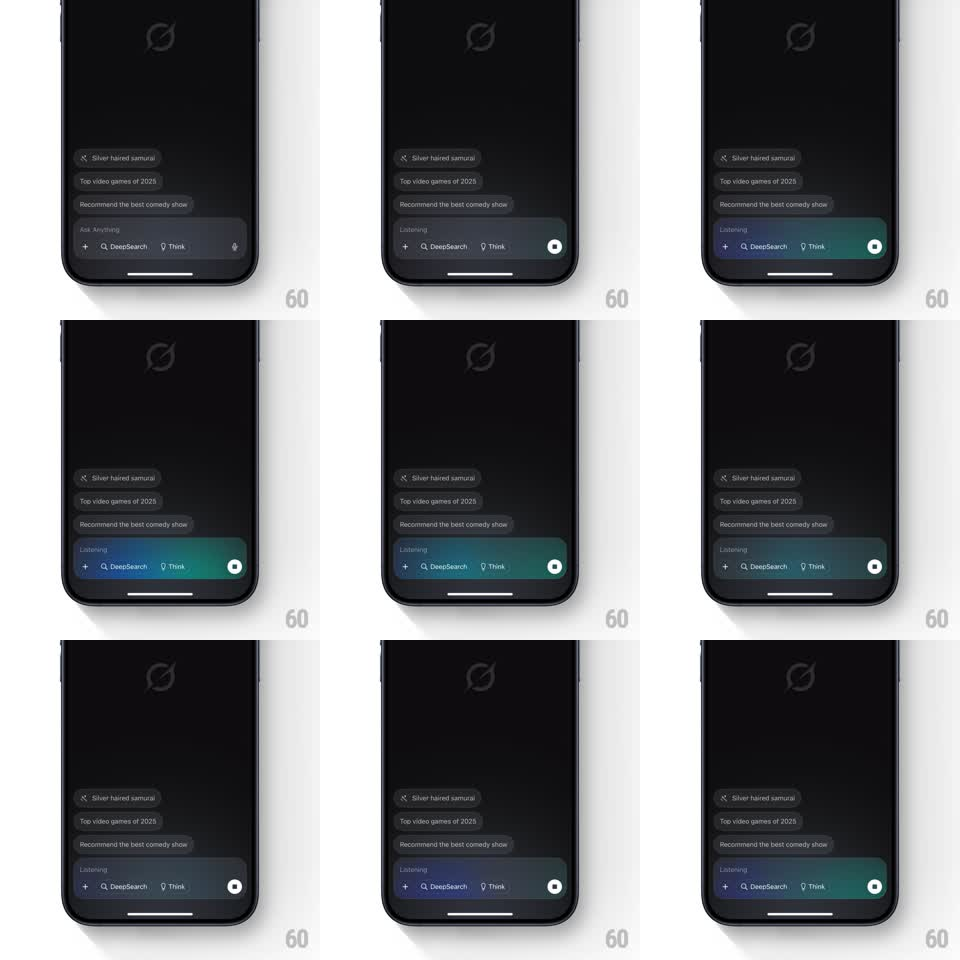

Media
Frame-by-frame

Rebuild this animation 1:1: Grok's voice-listening bar - when voice mode activates, the input bar fills with a smooth gradient glow that slowly pans and pulses between purple, blue, and teal while "Listening" sits above the field.

Rebuild this animation 1:1: Grok's voice-listening bar - when voice mode activates, the input bar fills with a smooth gradient glow that slowly pans and pulses between purple, blue, and teal while "Listening" sits above the field.
## Integration
Integration: stack-agnostic spec - springs given as stiffness/damping, timed motions as duration + curve; map every value to your framework and animation library of choice.
## Scene
Dark Grok chat screen: Grok logo watermark center, suggestion chips ("Silver haired samurai", "Top video games of 2025", "Recommend the best comedy show"), and the bottom input bar (+ button, DeepSearch and Think pills, mic). In listening state: the bar's background becomes a flowing gradient (purple -> blue -> teal -> green, left to right), "Listening" appears in small text above the field, and the mic button becomes a white-filled circle with a dark dot (stop).
## Motion spec
Pattern: panning multi-stop gradient pulse.
- Activation: the gradient washes into the bar from the left (opacity 0 -> 1 over a left-to-right wipe, 350ms); "Listening" fades in above (200ms); mic morphs to the stop dot (crossfade + scale 0.8 -> 1, 200ms).
- Idle listening: the gradient pans continuously - color stops drift left to right (one full cycle ~3s, linear), so purple yields to blue, teal, green and back; a soft brightness pulse rides the pan (peak luminance +-15%, 1.5s sine).
- The glow slightly bleeds past the bar's edges as a blurred halo (10pt blur, opacity 0.35) that breathes with the pulse.
- Deactivation: gradient fades out right-to-left (300ms), the bar returns to flat dark gray.
## Calibration
- The pan is slow and liquid - no banding, no visible stops; blend at least four color anchors.
- The halo must stay soft; hard glow edges read as a border, not a glow.
## Reduced motion
The bar shows a static blended gradient (no pan); the pulse and halo are removed.
## Don't miss
- The gradient lives only inside the bar - chips, logo, and background stay flat dark.
- The stop-dot button is solid white with a dark center, the inverse of the mic.